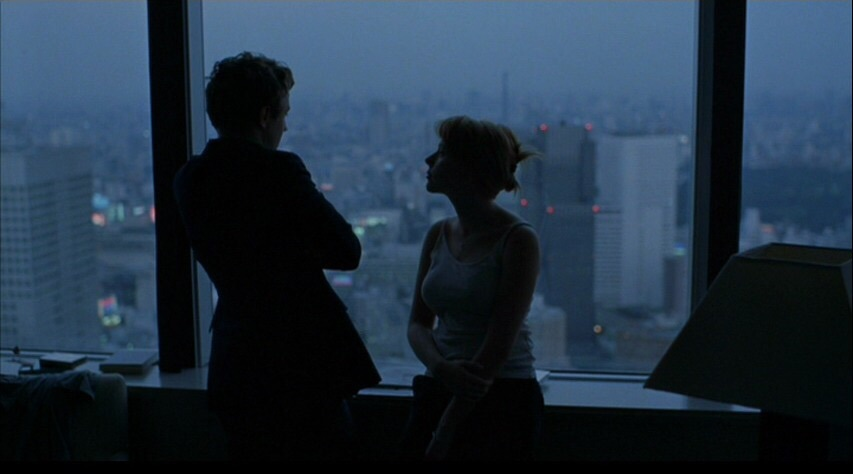

<h2>Sofia Coppola's <i>Lost in Translation</i> (2003).<br><br>
<span class="expanded2">
The beauty of this film's
cinematography is remarkable. It is hard for me to describe what draws me to this
film so I'll make do with wishy washy ramblings. The above image is one of my favourite stills
from the movie and I believe it is for a very personal reason. My relation to
Asia is extraordinarily my own. I continually try to write down in some form
of writing on what Asia and specifically Shanghai mean to me but I continually
fail. But if there's one way I can always drawn myself into this feeling, it is by
looking at this image. Perhaps this is why I am so fond of this movie however I believe
the narrative substance is equally compelling. I very much consider Spike
Jonze's <i>Her</i> (2013) to be <i>Lost in Translation</i>'s spiritual successor
and not just because both can be thought of to be the respective tellings of Coppola and Jonze's divorce. The shared themes of isolation and feelings of emptiness and lack of direction
are hard to describe moments that everyone feels in their life. It is seriously admirable
how in touch with this and how well Coppola and Jonze are able to depict these lonely sentiments.</span></h2>
